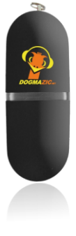

10 juillet 2009
La Dogma-Clé de Dogmazic
Sur le stand Dogmazic aux RMLL vous pouvez acheter une clé USB de 2 Go sérigraphiée avec de la musique libre.
Je trouve que c'est une très bonne initiative pour découvrir des artistes et d'avoir une sélection à écouter plutôt que de chercher un genre particulier sur le site.

En plus si vous achetez la clé (20 euros), vous devenez adhérant de l'association Musique Libre pour un an ! Pour plus d'information, allez sur la page du projet. Perso, j'ai acheté ma clé mais je n'ai pas encore eu le temps de tout écouter RMLL oblige :p
Commentaires 1